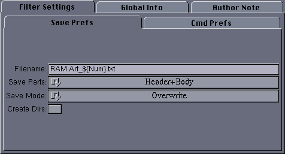
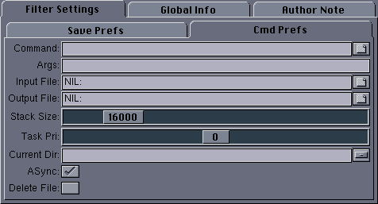

|
User Interface
|
The user interface for this filter has two main sections:

The available configuration options here are:
- Filename - This is the file to which the binary data should
be saved. The variable ${Num} will expand to the ordinal
number of the article being saved as a four digit integer.
- Save Parts - One of:
- Header+Body - The entire article including the header
and all body lines is saved.
- Header - Only the article headers are saved.
- Body - Only the body lines are saved.
- Save Mode - One of:
- Overwrite - Any old file with the same filename is
silently overwritten with the new data.
- Append - The saved data will be appended to any old file
with the same name.
- Skip - No data is saved if a file with the same filename
already exists.
- Suffix - If a file with the same filename already
exists, a four digit numeric suffix is appended to the filename of
the saved data.
- Create Dirs - If selected and the directory of the saved
file does not already exist, it will be created.

The available configuration options here are:
- Command - If non-empty, this command will be run after the
artilce text has been saved to the disk file.
- Args - Parameters for the command. The variable
${File} will expand to the filename to which the article lines
have been saved.
- Input File - Standard input for the command.
- Output File - Standard output for the command.
- Stack Size - Stack size for the command.
- Task pri - Task priority for the command.
- Current Dir - Current working directory for the command.
- Async - If set, the command will run asynchronously - i.e, in
the background. Otherwise, NewsRog will halt while the command
executes and resume after the command terminates.
- Delete File - If set, the saved file will be deleted after
the command has been run. This option is chiefly useful when Async is
turned off, or the file will be deleted before the command has a chance
to run.
Back to Top
|